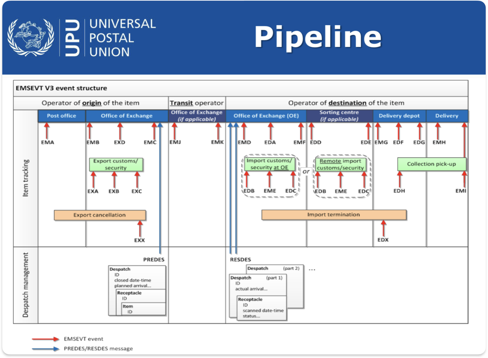
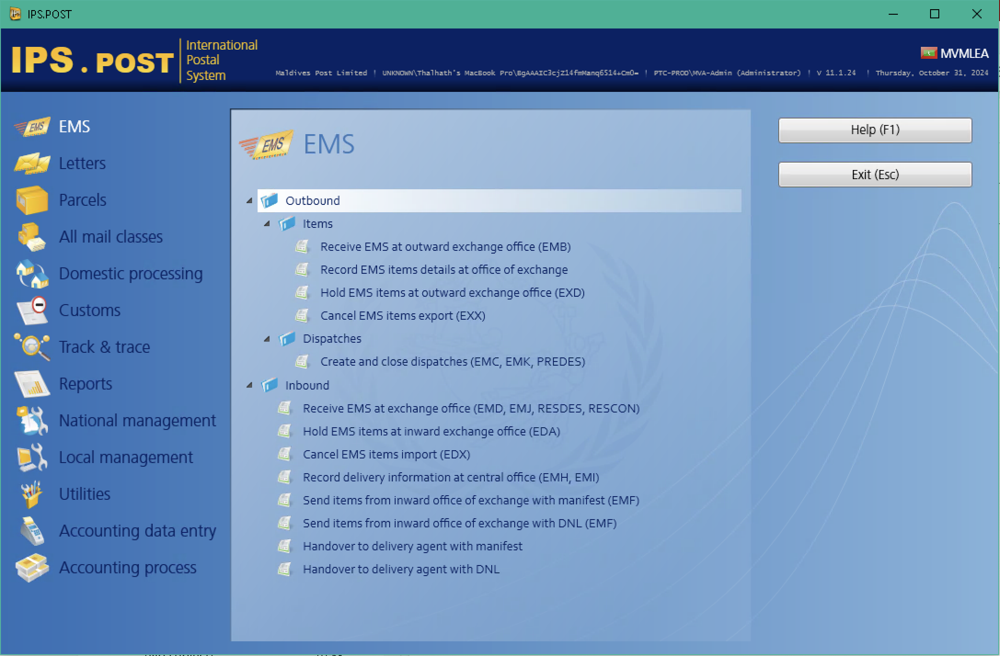

IPS is the universal platform used to transmit operational and financial messages to and from UPU Designated Operators in the form of EDI messages. IPS plays a very crucial role in the entire postal operations pipeline and in updating the whereabouts and the statuses of all of the items in the postal chain.


It is crucial to note that the seniors/managers from the respective sections will also have some level of accses to this tool
Currently IPS.POST integrates with multiple tools by using conventional XML rather than API connection for both Local and International tools provided by the UPU as detailed below: